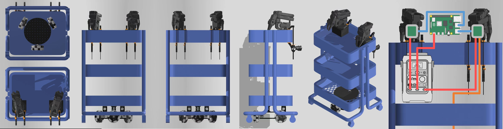
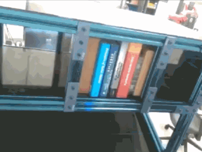
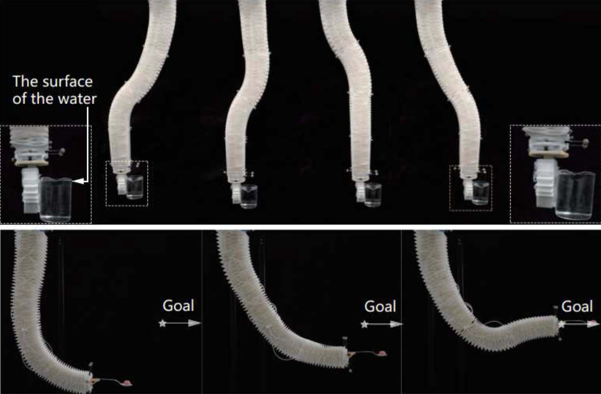
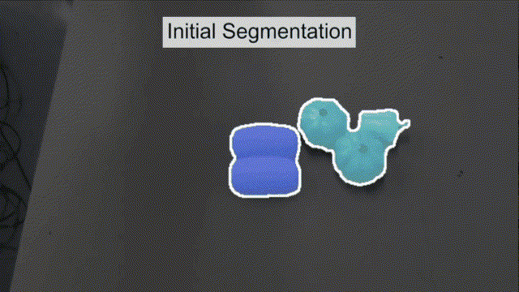
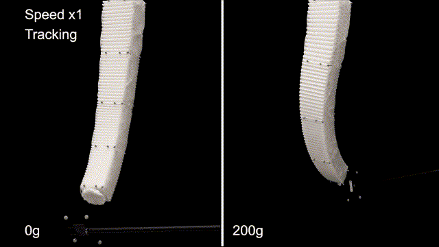
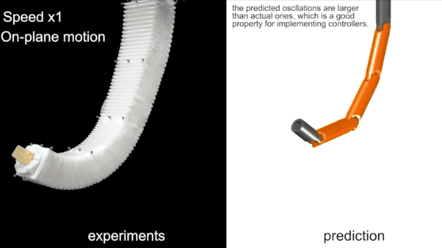
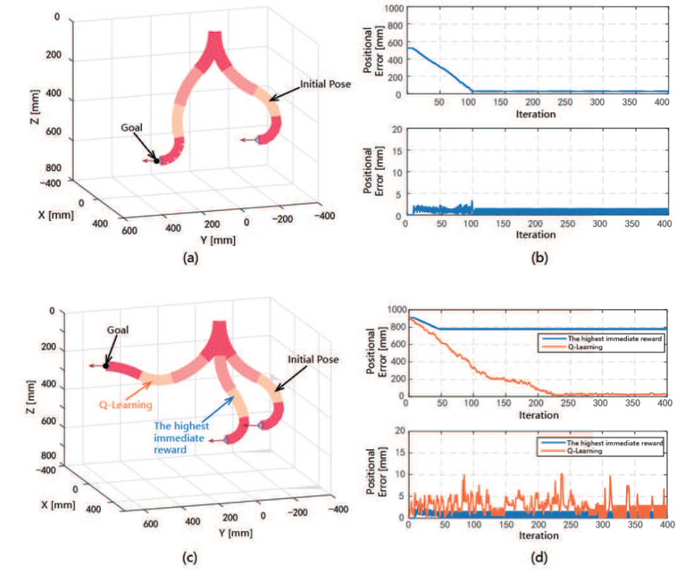

About 🧑💻
I am a graduate student at Rice University, focusing on robot manipulation (embodied AI) and motion planning in the RobotΠ lab, under the direction of Professor Kaiyu Hang.
My recent interest lies in
More details can be found in my curriculum vitae .
News 📰
- IJRR
-
Caging in Time: A Framework for Robust Object Manipulation under Uncertainties and Limited Robot Perception is accepted to IJRR. GO take a look!
- XLeRobot
-
XLeRobot is a fully open-sourced practical low-cost household dual-arm mobile robot for general manipulation, with $660 cost and less than 4 hours total assembly time. Parts available around the world. Fully based on LeRobot, easy access to vast LeRobot code and AI models, interact with 6000+ (rapidly growing) community members. Go take a look!
XLeRobot: A low-cost dual-arm mobile manipulation platform
Projects 🦾
- Caging in Time for Robust Object Manipulation
- A system model that propagates the Potential State Set(PSS) over time and construct caging configurations in time for robust manipulation.
- Instantiated on both quasi-static and dynamic non-prehensile manipulation tasks in an open-loop manner without specific object properties known a priori
- XLeRobot: A Practical Low-cost Household
- Dual-Arm Mobile Robot for General Manipulation
- XLeRobot = XL LeRobot = Lekiwi base + SO101 arm + IKEA cart + Anker power supply. $660 cost and less than 4 hours total assembly time.
- Fully based on LeRobot, easy access to vast LeRobot code and AI models, interact with 6000+ (rapidly growing) community members.
Publications 📰
Peer-Reviewed Journal Articles
- J4.
-
Caging in Time: A Framework for Robust Object Manipulation under Uncertainties and Limited Robot Perception
Gaotian Wang ,Kejia Ren ,Andrew S. Morgan ,Kaiyu Hang
International Journal of Robotics Research (IJRR)Bibtex / Abstract / PDF / 中文 / Poster / Video
Real-world object manipulation has been commonly challenged by physical uncertainties and perception limitations. Being an effective strategy, while caging configuration-based manipulation frameworks have successfully provided robust solutions, they are not broadly applicable due to their strict requirements on the availability of multiple robots, widely distributed contacts, or specific geometries of the robots or the objects. To this end, this work proposes a novel concept, termed Caging in Time, to allow caging configurations to be formed even if there is just one robot engaged in a task. This novel concept can be explained by an insight that even if a caging configuration is needed to constrain the motion of an object, only a small portion of the cage is actively manipulating at a time. As such, we can switch the configuration of the robot strategically so that by collapsing its configuration in time, we will see a cage formed and its necessary portion active whenever needed. We instantiate our Caging in Time theory on challenging quasistatic and dynamic manipulation tasks, showing that Caging in Time can be achieved in general state spaces including geometry-based and energy-based spaces. With extensive experiments, we show robust and accurate manipulation, in an open-loop manner, without requiring detailed knowledge of the object geometry or physical properties, nor realtime accurate feedback on the manipulation states. In addition to being an effective and robust open-loop manipulation solution, the proposed theory can be a supplementary strategy to other manipulation systems affected by uncertain or limited robot perception.
@article{wang2024caging, title={Caging in Time: A Framework for Robust Object Manipulation under Uncertainties and Limited Robot Perception}, author={Wang, Gaotian and Ren, Kejia and Morgan, Andrew S. and Hang, Kaiyu}, journal={arXiv preprint arXiv:2410.16481}, year={2024} }
2025
- J3.
-
Collision-inclusive Manipulation Planning for Occluded Object Grasping via Compliant Robot Motions
Kejia Ren ,Gaotian Wang ,Andrew S. Morgan ,Kaiyu Hang
arXiv preprintBibtex / Abstract / PDF / Video
Traditional robotic manipulation mostly focuses on collision-free tasks. In practice, however, many manipulation tasks (e.g., occluded object grasping) require the robot to intentionally collide with the environment to reach a desired task configuration. By enabling compliant robot motions, collisions between the robot and the environment are allowed and can thus be exploited, but more physical uncertainties are introduced. To address collision-rich problems such as occluded object grasping while handling the involved uncertainties, we propose a collision-inclusive planning framework that can transition the robot to a desired task configuration via roughly modeled collisions absorbed by Cartesian impedance control. By strategically exploiting the environmental constraints and exploring inside a manipulation funnel formed by task repetitions, our framework can effectively reduce physical and perception uncertainties. With real-world evaluations on both single-arm and dual-arm setups, we show that our framework is able to efficiently address various realistic occluded grasping problems where a feasible grasp does not initially exist.
@misc{ren2024collisioninclusivemanipulationplanningoccluded, title={Collision-inclusive Manipulation Planning for Occluded Object Grasping via Compliant Robot Motions}, author={Kejia Ren and Gaotian Wang and Andrew S. Morgan and Kaiyu Hang}, year={2024}, eprint={2412.06983}, archivePrefix={arXiv}, primaryClass={cs.RO}, url={https://arxiv.org/abs/2412.06983}, } - J2.
-
Object-Centric Kinodynamic Planning for Nonprehensile Robot Rearrangement Manipulation
Kejia Ren ,Gaotian Wang ,Andrew S. Morgan ,Lydia E. Kavraki ,Kaiyu Hang
arXiv preprintBibtex / Abstract / PDF / Video
Nonprehensile actions such as pushing are crucial for addressing multi-object rearrangement problems. To date, existing nonprehensile solutions are all robot-centric, i.e., the manipulation actions are generated with robot-relevant intent and their outcomes are passively evaluated afterwards. Such pipelines are very different from human strategies and are typically inefficient. To this end, this work proposes a novel object-centric planning paradigm and develops the first object-centric planner for general nonprehensile rearrangement problems. By assuming that each object can actively move without being driven by robot interactions, the object-centric planner focuses on planning desired object motions, which are realized via robot actions generated online via a closed-loop pushing strategy. Through extensive experiments and in comparison with state-of-the-art baselines in both simulation and on a physical robot, we show that our object-centric paradigm can generate more intuitive and task-effective robot actions with significantly improved efficiency. In addition, we propose a benchmarking protocol to standardize and facilitate future research in nonprehensile rearrangement.
@misc{ren2024objectcentric, title={Object-Centric Kinodynamic Planning for Nonprehensile Robot Rearrangement Manipulation}, author={Kejia Ren and Gaotian Wang and Andrew S. Morgan and Lydia E. Kavraki and Kaiyu Hang}, year={2024}, eprint={2410.00261}, archivePrefix={arXiv}, primaryClass={cs.RO} }
2024
- J1.
-
A Reinforcement Learning Method for Motion Control With Constraints on an HPN Arm
Yinghao Gan ,Peijin Li ,Hao Jiang ,Gaotian Wang ,Yusong Jin ,Xiaoping Chen , andJianmin Ji
IEEE Robotics and Automation Letters (RAL)Bibtex / Abstract / PDF / Publisher
Soft robotic arms have shown great potential toward applications to human daily lives, which is mainly due to their infinite passive degrees of freedom and intrinsic safety. There are tasks in lives that require the motion of the robot to meet some certain pose constraints that have not been implemented through the soft arm, like delivering a glass of water. Because the workspace of the soft arm is affected by the loads or interaction, it is difficult to implement this task through the motion planning method. In this letter, we propose a Q-learning based approach to address the problem, directly achieving motion control with constraints under loads and interaction without planning. We first generate a controller for the soft arm based on Q-learning, which can operate the arm while satisfying the pose constraints when the arm is neither loaded nor interacted with the environment. Then, we introduce a process that adjusts corresponding Q values in the controller, which allows the controller to operate the arm with an unknown load or interaction while still satisfying the pose constraints. We implement the approach on our soft arm, i.e., the Honeycomb Pneumatic Network (HPN) Arm. The experiments show that the approach is effective, even when the arm reached an untrained situation or even beyond the workspace under the interaction.
@ARTICLE{9851517, author={Gan, Yinghao and Li, Peijin and Jiang, Hao and Wang, Gaotian and Jin, Yusong and Chen, Xiaoping and Ji, Jianmin}, journal={IEEE Robotics and Automation Letters}, title={A Reinforcement Learning Method for Motion Control With Constraints on an HPN Arm}, year={2022}, volume={7}, number={4}, pages={12006-12013}, keywords={Motion control;Q-learning;Manipulators;Task analysis;Soft robotics;Load modeling;Data models;Machine learning for robot control;modeling;control;and learning for soft robots;soft robot applications}, doi={10.1109/LRA.2022.3196789}}
2022
Peer-Reviewed Conference Articles
- C5.
-
UNO Push: Unified Nonprehensile Object Pushing via Non-Parametric Estimation and Model Predictive Control
Gaotian Wang ,Kejia Ren ,Kaiyu Hang
IEEE/RSJ International Conference on Intelligent Robots and Systems (IROS)Bibtex / Abstract / PDF / Video
Nonprehensile manipulation through precise pushing is an essential skill that has been commonly challenged by perception and physical uncertainties, such as those associated with contacts, object geometries, and physical properties. For this, we propose a unified framework that jointly addresses system modeling, action generation, and control. While most existing approaches either heavily rely on a priori system information for analytic modeling, or leverage a large dataset to learn dynamic models, our framework approximates a system transition function via non-parametric learning only using a small number of exploratory actions (ca. 10). The approximated function is then integrated with model predictive control to provide precise pushing manipulation. Furthermore, we show that the approximated system transition functions can be robustly transferred across novel objects while being online updated to continuously improve the manipulation accuracy. Through extensive experiments on a real robot platform with a set of novel objects and comparing against a state-of-the-art baseline, we show that the proposed unified framework is a light-weight and highly effective approach to enable precise pushing manipulation all by itself. Our evaluation results illustrate that the system can robustly ensure millimeter-level precision and can straightforwardly work on any novel object.
@misc{wang_push_2024, title = {{UNO} Push: Unified Nonprehensile Object Pushing via Non-Parametric Estimation and Model Predictive Control}, url = {http://arxiv.org/abs/2403.13274}, author = {Wang, Gaotian and Ren, Kejia and Hang, Kaiyu}, date = {2024-03-19}, eprint = {2403.13274 [cs]}, publisher = {arXiv}, langid = {english}, }
- C4.
-
RISeg: Robot Interactive Object Segmentation via Body Frame-Invariant Features
Howard Qian ,Yangxiao Lu ,Kejia Ren ,Gaotian Wang ,Ninad Khargonkar ,Yu Xiang ,Kaiyu Hang
IEEE International Conference on Robotics and Automation (ICRA)Bibtex / Abstract / PDF / Video
In order to successfully perform manipulation tasks in new environments, such as grasping, robots must be proficient in segmenting unseen objects from the background and/or other objects. Previous works perform unseen object instance segmentation (UOIS) by training deep neural networks on large-scale data to learn RGB/RGB-D feature embeddings, where cluttered environments often result in inaccurate segmentations. We build upon these methods and introduce a novel approach to correct inaccurate segmentation, such as under-segmentation, of static image-based UOIS masks by using robot interaction and a designed body frame-invariant feature. We demonstrate that the relative linear and rotational velocities of frames randomly attached to rigid bodies due to robot interactions can be used to identify objects and accumulate corrected object-level segmentation masks. By introducing motion to regions of segmentation uncertainty, we are able to drastically improve segmentation accuracy in an uncertainty-driven manner with minimal, non-disruptive interactions (ca. 2-3 per scene). We demonstrate the effectiveness of our proposed interactive perception pipeline in accurately segmenting cluttered scenes by achieving an average object segmentation accuracy rate of $80.7 \%$, an increase of $28.2 \%$ when compared with other state-of-the-art UOIS methods.
@article{qian_riseg_nodate, title = {{RISeg}: Robot Interactive Object Segmentation via Body Frame-Invariant Features}, author = {Qian, Howard and Lu, Yangxiao and Ren, Kejia and Wang, Gaotian and Khargonkar, Ninad and Xiang, Yu and Hang, Kaiyu}, langid = {english}, file = {Qian et al. - RISeg Robot Interactive Object Segmentation via B.pdf:C\:\\Users\\Vector Wang\\Zotero\\storage\\AH2HDVLC\\Qian et al. - RISeg Robot Interactive Object Segmentation via B.pdf:application/pdf}, } - C3.
-
Kinematic Modeling and Control of a Soft Robotic Arm with Non-constant Curvature Deformation
Zhanchi Wang ,Gaotian Wang ,Xiaoping Chen , andNikolaos M Freris
IEEE International Conference on Robotics and Automation (ICRA)The passive compliance of soft robotic arms renders the development of accurate kinematic models and modelbased controllers challenging. The most widely used model in soft robotic kinematics assumes Piecewise Constant Curvature (PCC). However, PCC introduces errors when the robot is subject to external forces or even gravity. In this paper, we establish a three-dimensional (3D) kinematic representation of a soft robotic arm with pseudo universal and prismatic joints that are capable of capturing non-constant curvature deformations of the soft segments. We theoretically demonstrate that this constitutes a more general methodology than PCC. Simulations and experiments on the real robot attest to the superior modeling accuracy of our approach in 3D motions with unknown loads. The maximum position/rotation error of the proposed model is verified $6.7 \times / 4.6 \times$ lower than the PCC model considering gravity and external forces. Furthermore, we devise an inverse kinematic controller that is capable of positioning the tip, tracking trajectories, as well as performing interactive tasks in the 3D space.
@article{wang_kinematic_nodate, title = {Kinematic Modeling and Control of a Soft Robotic Arm with Non-constant Curvature Deformation}, author = {Wang, Zhanchi and Wang, Gaotian and Chen, Xiaoping and Freris, Nikolaos}, langid = {english}, file = {Wang et al. - Kinematic Modeling and Control of a Soft Robotic A.pdf:C\:\\Users\\Vector Wang\\Zotero\\storage\\2N79EKKQ\\Wang et al. - Kinematic Modeling and Control of a Soft Robotic A.pdf:application/pdf}, }
2024
- C2.
-
Dynamic modeling and Control of a Soft Robotic Arm Using a Piecewise Universal Joint Model
Zhanchi Wang ,Gaotian Wang ,Xiaoping Chen , andNikolaos M Freris
IEEE International Conference on Robotics and Biomimetics (ROBIO)Bibtex / Abstract / PDF / Publisher / Video
The Piecewise Constant Curvature (PCC) assumption is the most widely used in the modeling and control of soft robots. However, a limitation of PCC models lies in accurately describing the deformation of a soft robot when executing dynamic tasks such as operating under gravity or interacting with humans. This paper introduces a new methodology for dynamic modeling and control of a multi-segment soft arm in the 3D space where each segment undergoes non-constant curvature deformations. In this framework, the soft manipulator is modeled as a series of segments, with each one represented by two stretchable links connected by a universal joint. Furthermore, we devise and analyze a controller for motion control in the configuration space with unknown load. The controller is implemented on a four-segment soft robotic manipulator and validated in a range of dynamic trajectory tracking tasks.
@INPROCEEDINGS{10354732, author={Wang, Zhanchi and Wang, Gaotian and Chen, Xiaoping and Freris, Nikolaos M.}, booktitle={2023 IEEE International Conference on Robotics and Biomimetics (ROBIO)}, title={Dynamic modeling and Control of a Soft Robotic Arm Using a Piecewise Universal Joint Model}, year={2023}, volume={}, number={}, pages={1-6}, keywords={Solid modeling;Three-dimensional displays;Deformation;Motion segmentation;Dynamics;Soft robotics;Aerospace electronics}, doi={10.1109/ROBIO58561.2023.10354732}}
2023
- C1.
-
A Q-learning Control Method for a Soft Robotic Arm Utilizing Training Data from a Rough Simulator
Peijin Li ,Gaotian Wang ,Hao Jiang ,Yusong Jin ,Yinghao Gan ,Xiaoping Chen , andJianmin Ji
IEEE International Conference on Robotics and Biomimetics (ROBIO)Bibtex / Abstract / PDF / Publisher
It is challenging to control a soft robot, where reinforcement learning methods have been applied with promising results. However, due to the poor sample efficiency, reinforcement learning methods require a large collection of training data, which limits their applications. In this paper, we propose a Q-learning controller for a physical soft robot, in which pre-trained models using data from a rough simulator are applied to improve the performance of the controller. We implement the method on our soft robot, i.e., Honeycomb Pneumatic Network (HPN) arm. The experiments show that the usage of pre-trained models can not only reduce the amount of the real-world training data, but also greatly improve its accuracy and convergence rate.
@INPROCEEDINGS{9739524, author={Li, Peijin and Wang, Gaotian and Jiang, Hao and Jin, Yusong and Gan, Yinghao and Chen, Xiaoping and Ji, Jianmin}, booktitle={2021 IEEE International Conference on Robotics and Biomimetics (ROBIO)}, title={A Q-learning Control Method for a Soft Robotic Arm Utilizing Training Data from a Rough Simulator}, year={2021}, volume={}, number={}, pages={839-845}, keywords={Q-learning;Costs;Conferences;Biomimetics;Biological system modeling;Training data;Soft robotics}, doi={10.1109/ROBIO54168.2021.9739524}}
2021
Experience 🧗
Education
- Ph.D. in Computer Science
- Advisor: Dr. Kaiyu Hang
- B.S. in Optical Engineering
- Thesis: A Randomized Kinodynamic Planner for Soft Robots based on Piecewise Universal Joint Model
- Advisor: Dr. Nikolaos M. Freris
Research
- Graduate Student
- Advisor: Dr. Kaiyu Hang
- Undergraduate Researcher
- Advisor: Dr. Nikolaos M. Freris
- Guest Researcher
- Supervisor: Dr. Fabio Zuliani and Dr. Jamie Paik
- Undergraduate Researcher
- Advisor: Dr. Hao Jiang and Dr. Xiaoping Chen
Teaching 🧑🏫
- Teaching Assistant for Algorithmic Robotics | Fall 2023
COMP/ELEC/MECH 450/550 at Rice University - Teaching Assistant for Deep Learning for Vision & Language | Spring 2023
COMP 646 at Rice University - In-lab Teaching Assistant for College Physics-Comprehensive Experimentation | Fall 2020-2022
at University of Science and Technology of China
Life 🏔️🧗🏂🛹🏜️🗽⛹️🚀
We bring robots to life, but life is more than robots.